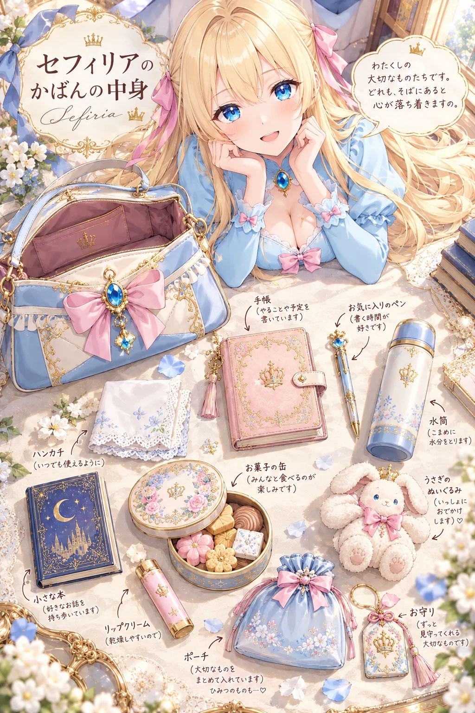
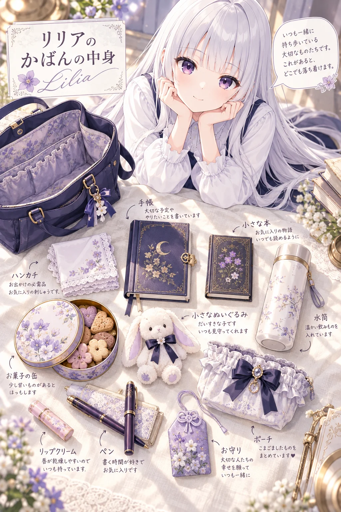
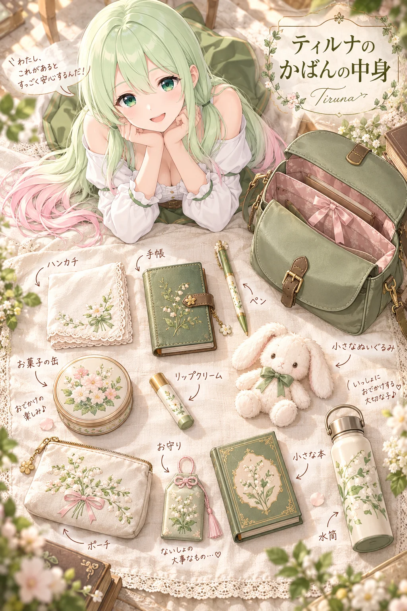

うちの子の「かばんの中身」ができるプロンプト
ひみつの眠り姫のプロンプト配布
GPT-image-2 用2026-10-25
ChatGPT（GPT-image-2）に自分のキャラの絵を1枚渡して、この文を貼るだけ。生成りのリネンの上に、口を開けたうちの子のかばんと、その中身が8〜10品、きれいに並んだ真上からの一枚。物の横には手書きの名前と細い矢印、ひとつかふたつにはひみつめいた短いコメント。奥ではキャラ本人がほおづえをついてこちらを見上げ、吹き出しでひとこと。朝の光が斜めに差して、物の影がやさしく落ちる仕上がりです。かばんの形も、中に入っている物も、それぞれの説明も、AIがキャラを読み取って毎回ちがうものを考えてくれます。名前のほかは空欄でもOK。入れる物や色・服・背景を決めたいときは、その欄に書くだけです。
作例



※作例の画像の転載・保存しての再配布はご遠慮ください。
3人のおしゃべり（かばんの中身）

リリア
今日は、三人のかばんの中身を見せ合いっこしませんか。セフィリア様から、並べてくださいますか

セフィリア
ええ、喜んで。まずは手帳とペン、それから水筒と、お菓子の缶を並べますね

ティルナ
わあ、手帳に王冠がついてる！ ペンの頭にも、水筒にも、お菓子の缶にも王冠！

リリア
お守りにも、王冠がありますね。セフィリア様の持ち物は、どれも小さなお城みたいです

セフィリア
ふふ。ポーチの説明には「大切なものをまとめて入れています。ひみつのものも……」と書いてあります

ティルナ
ひみつのもの！ なに入ってるの？ セフィー、見せて見せて！

セフィリア
それは……ひみつ、です。さあ、次はティルナの番にしましょう

ティルナ
わたしのはね、ぜんぶすずらんの刺しゅうでおそろいなの！ お守りのところには「ないしょの大事なもの…♡」って書いてあるよ

リリア
ティルナちゃんにも、ないしょがあるのですね。わたしのは、紫のお花の柄でそろっています。手帳は三日月です
セフィリア
これが今日の配布の「かばんの中身」です。絵と名前を入れるだけで、かばんの形も中身も、ひとつずつの説明も考えてくれます
リリア
入れる物は、追加の指示の欄で決められます。わたしたちは「ハンカチ・手帳・お守り……」と候補を書いて、そこから選んでもらいました
ティルナ
あれ？ ねえリリア、セフィー、まん中のぬいぐるみ見て

セフィリア
まあ。わたくしのも、うさぎのぬいぐるみ……小さな王冠をかぶっています

リリア
わたしのも、うさぎです。首のリボンの色が、ちがうだけで

ティルナ
わたしのもうさぎ！ 三人とも、かばんにうさぎを入れて歩いてたんだね！

リリア
候補には「小さなぬいぐるみ」としか書いていないのに……三匹とも、いっしょにおでかけしたかったのかもしれません

セフィリア
では今度、三匹を並べて、うさぎのお茶会を開きましょう。ポーチのひみつは、そのときも教えませんけれど
使い方（3ステップ）
- ChatGPT を開いて、画像を作れるモード（GPT-image-2）にする
- 自分のキャラの絵を1枚だけ添付する（自分の絵・使ってよい画像だけ。いつもの絵のままでOK。下の「おまけ」で元絵を作った人は元絵を）
- 下のプロンプトをワンタップでコピーして、いちばん上の「▼ ここに書く」の欄（色の付いたところ）にキャラの名前などを書いて送信する（名前のほかは空欄でもOK。服・背景・ポーズを変えたいときは、その欄に書くだけ）
プロンプト
書くのは「▼ ここに書く」の欄だけ
- 色の付いたところ（「：」のうしろ）に書くだけ。【 】は消さずにそのまま残してね
- 下の文章に出てくる【キャラの名前】などは書き換えなくてOK（AIが上の欄を読んでくれます）
- 任意の欄は空のままでも大丈夫（おまかせになります）
- 👗 服・アクセサリー／背景／ポーズを変えたいときは、その欄に書くだけ。欄に書いた内容が下の文章より優先されるように作ってあるので、下の文章は書き換えなくてOK。空欄なら、服とアクセサリーは添付した絵のまま、背景とポーズは下の文章のとおりになります。顔立ち・髪型・髪色・目の色は、いつも添付した絵のままです
- 💡 添付した絵と違う服にしたいときは、色と形まで具体的に書くと混ざりにくくなります（例：「白いニット」より「白いケーブル編みのニットと紺のプリーツスカート」）
- 🚫 添付する絵は自分のキャラ・自分が権利を持つ画像だけ。版権キャラ・他の人のキャラの画像は固く禁止です（下の「配布ルール」）
プロンプト
添付した画像のキャラクターを読み取って、そのキャラの「かばんの中身」を、かばんと中身をきれいに並べて真上から撮った写真のようなイラストで作ってください。 かばんの形・中に入っている物・それぞれの名前・キャラのひとことは、キャラの見た目や性格からあなたが考えて作ってください（毎回ちがう結果になってOK）。 ▼ ここに書く（「：」のうしろに書くだけ。【 】は消さずにそのまま。名前だけは必ず書く。ほかの空の欄はおまかせ） 服・アクセサリー・背景・ポーズを変えたいときは、その欄に書くだけ（下の文章は書き換えなくてOK） 【キャラの名前】： 【テーマカラー】： 【服・アクセサリー】： 【背景】： 【ポーズ・追加の指示】： ▲ ここまで（下の文章に出てくる【 】は、上の欄に書いた内容のこと。下は書き換えない） ■ 上の欄の使い方（ここは変えない） ・【服・アクセサリー】が書いてあれば、写真の中のキャラの服をそれにする。顔立ち・髪型・髪色・目の色・髪飾りは添付画像のまま。空欄なら添付画像の服のまま ・【背景】が書いてあれば、下の文章のシーツの上より、そちらを優先する。空欄なら下の文章のとおり ・【ポーズ・追加の指示】が書いてあれば、中身の物やキャラのしぐさ、ひとことの口調をそちらにする。空欄なら下の文章のとおり ■ 場面の作り ・真上から見下ろした構図。やわらかい生成りのリネンの上に、キャラに似合うかばんをひとつ口を開けて置き、その中身を8〜10品、すきまを空けてきれいに並べる（ハンカチ・手帳・お菓子・小さな宝物など、その子らしい物） ・画面の上のほうに【キャラの名前】本人。リネンのそばにひざをついて、並べた中身をのぞきこむように、こちらを見上げてほほえむ（上半身と顔がしっかり見える）。顔立ち・髪型・髪色・目の色・髪飾り・服は添付画像のキャラだと一目でわかるように ・それぞれの物の横に、手書き風の小さな文字で名前を1行と、細い矢印。ひとつかふたつに、ひみつめいた短いコメントを添える ・画面のすみに、タイトル「【キャラの名前】のかばんの中身」を、細い明朝体の見出しと、筆記体の欧文ロゴで ・画面のどこかに、【キャラの名前】の小さなひとこと（キャラの口調で1行） ・名前の書き方＝日本語の文の中の名前はカタカナで書く（【キャラの名前】がアルファベットなら、その読みをカタカナにして書く）。飾りの欧文はローマ字 ・【テーマカラー】が書いてあれば、かばんとリボンの色にする。空欄ならキャラの髪と目の色から選ぶ ・文字は多くてよい。値段・日付・数字は入れない。崩れや誤字のない、正しい日本語で ・窓からのやわらかい朝の光が斜めに差して、物の影がリネンにやさしく落ちている ■ 仕上がりの質（ここは変えない） ・キャラは、細い線と髪の毛束、宝石のように何層も重ねた瞳のハイライト、肌のやわらかい陰影と血色、服のフリルや金具まで ・かばんの革や布の質感、ガラスや金具の反射、リネンの織り目まで細かく描く ・光のやわらかさと、手前と奥のボケで空気感を出す ・上品で透明感のある配色。ハイエンドなアニメイラストの最高品質、超高精細 ・縦長 2:3
書くところ
| 欄 | 説明 | 例 |
|---|---|---|
| 【キャラの名前】 | 必須。タイトルと欧文のロゴに入ります。日本語の文の中はカタカナになるように書いてあります | セフィリア（Sefiria）／リリア／Tiruna |
| 【テーマカラー】 | 任意。かばんとリボンの色になります。空欄なら、キャラの髪と目の色からAIが選びます | （空欄）／水色と金 |
| 【服・アクセサリー】 | 任意。空欄なら添付した絵の服のまま。書くと、奥のキャラがその服になります（顔立ち・髪型・髪色・目の色は添付のまま） | （空欄）／白いニットのセーター |
| 【背景】 | 任意。中身を並べる場所。空欄なら、朝の光が差す生成りのリネンの上です | （空欄）／図書館の大きな木の机の上 |
| 【ポーズ・追加の指示】 | 任意。入れる物の候補や、キャラのしぐさ、ひとことの口調を書けます | （空欄）／かばんの中身は、ハンカチ・手帳・お菓子の缶・お守りなどから選ぶ |
（おまけ）元絵を綺麗にしておくと、もっと綺麗に
元絵は作っても作らなくても大丈夫です。いつものキャラの絵をそのまま添付しても、上のプロンプトで綺麗に仕上がります。もっと綺麗に・毎回ブレずに作りたい人は、先にこの手順でこのプロンプトに合わせた「元絵」を作っておくのがおすすめです。書き換えるところはないので、そのままコピーして使えます。
- ChatGPT を開き、新しいチャットで画像を作れる状態（GPT-image-2）にする
- 自分のキャラの絵を1枚だけ添付する（全身が写っている、いちばん「その子らしい」絵がおすすめ。ラフや小さい絵でも大丈夫）
- 下の「元絵を作るプロンプト」をそのままコピーして貼り、送信する（書き換えるところはありません）
- できた絵を保存する。これがあなたのキャラの、このプロンプト用の「元絵」です
- 新しいチャットを開き、保存した元絵を添付して、このページの上の「プロンプト」を貼って送信する
元絵を作るプロンプト（そのままコピーして送るだけ）
添付した画像のキャラクターを、「かばんの中身」プロンプトで使う元絵として、同じキャラのまま最高品質の繊細なアニメイラストで描き直してください。 ■ キャラ（ここは添付画像のまま） ・顔立ち、髪型、髪の長さ、髪色、目の色、髪飾り、服のデザインと色、アクセサリーは添付画像のまま変えない ・添付画像で見えない部分は、見えている部分から自然につなげて描く ■ 構図（かばんの中身のイラストの奥にいる形） ・胸から上。両手でほおづえをついて、こちらを見てやさしくほほえむ。目の色がよく見えるように目を開ける ・髪型と髪飾り、服の襟と袖の形がはっきり見えるように ・背景は白だけ。小物や文字は入れない ■ 仕上がりの質 ・線は細く繊細に。髪は一本一本の毛束と、光を受けたやわらかい艶まで描き込む ・瞳は宝石のように何層もの色とハイライトを重ねて、きらきらと輝かせる ・肌はやわらかな陰影と、頬にほんのり血色 ・服のレースやフリル、ボタン、アクセサリーの宝石と金具まで細かく描く ・やわらかな光で輪郭をきれいに。上品で透明感のある配色、ハイエンドなアニメイラストの最高品質、超高精細 ・縦長 2:3
うまくいかない時
- 元絵は、かばんの奥にいる姿の元になるように、両手でほおづえをついてほほえむ胸から上の姿・背景は白だけにしてあります。
メモ
- かばんの形・中身・ひとつずつの説明・ひとことは、毎回AIがキャラに合わせて考えます。
- 入れる物を決めたいときは【ポーズ・追加の指示】に「かばんの中身は、ハンカチ・手帳・お菓子の缶・お守りなどから選ぶ」のように候補を書いてください（上の3枚は、すべて同じ候補を書いています）。
- 空欄だと、身だしなみの小物ばかりが並ぶことがあります。物語のある物を並べたいときは「身だしなみの小物は入れない」と書き足すのがおすすめです。
- 本や缶の表紙に、読めない英字が入ることがあります。気になるときは【ポーズ・追加の指示】に「本や缶の表紙には文字を書かない」と書き足してください。
- ひとことの口調は、AIが絵から想像します。「上品なお嬢さまの口調」と書くと「〜ですわ」になりやすいので、一人称と、使わない語尾まで書くのがおすすめです（セフィリアの作例）。
- 名前は「セフィリア（Sefiria）」のようにカタカナと英字を両方書くと、タイトルの日本語の名前と欧文のロゴの両方がきれいに入ります。
- 値段や日付などの数字は入らないようにしてあります。
- 物の横の説明は字が小さいので、つぶれや誤字が出やすいところです。原寸で見て気になったら、下の一行で直してください。
- 服を変えたら顔や髪まで変わってしまったときは、同じチャットで「顔立ち・髪型・髪色・目の色は添付画像のままで、服とアクセサリーだけ【服・アクセサリー】にして描き直して」と送ってください。
- 文字がつぶれたり誤字があるときは、同じチャットで「文字の崩れと誤字を直して、もう一度」と送ると直りやすいです。
- 「■ 上の欄の使い方」と「■ 仕上がりの質」の段落は消さずにそのまま送ってください。欄に書いた内容が優先されるのと、真上からの並べ方、布と小物の質感、朝の光の影は、ここで決まっています。
配布ルール
- ⭕ プロンプトの改変は自由です。
- ⭕ 生成した画像は SNS に投稿して大丈夫です。
- ❌ プロンプト文そのものの転載・再配布・販売はしないでください。
- ❌ 自作のプロンプトだと名乗ることはやめてください。
- ❌ このページの作例画像の無断転載はしないでください。
- 🚫 アニメ・漫画・ゲームなどの版権キャラクター（著作権・商標のあるキャラ）、他の人のキャラクターやイラスト、実在の人物の写真を添付画像にして使うことは固く禁止します。版権キャラの名前や、版権キャラの LoRA を入れて使うことも禁止です。
- ✅ 添付してよいのは、自分で作ったキャラクター・自分が権利を持つ画像（または権利者から使ってよいと言われた画像）だけです。
- ⚠️ 生成した画像の使い方（投稿・公開など）は、使った人の責任でお願いします。権利の問題が起きても、配布者は責任を負えません。
- 💌 使ったら #眠り姫プロンプト を付けて見せてくれたら、とても嬉しいです（任意です）。
📚 これまでの配布プロンプト（バックナンバー）が見たい方は、直接ひみつの眠り姫までお気軽にお問い合わせください。